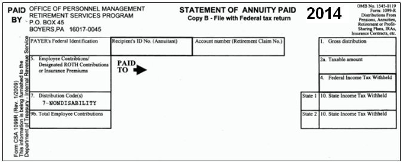
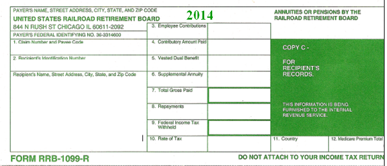

Line 5 – Pensions and Annuity Income
1099-R Form – Pensions and Annuities
- As mentioned above, Form 1099-R is used for two somewhat similar things: distributions from qualified retirement accounts, and pensions and annuities. Distributions are covered earlier, on page 37.
- Generally, if a Form 1099-R is for a pension or annuity, then the checkbox “IRA/SEP/SIMPLE” (near the box 7 code) will not be checked. This box is also not checked for Roth IRA distributions.
- If this box is checked, TaxSlayer will put the income on Line 4 of Form 1040, not Line 5.
- Annuities and pensions will have, in box 7, one of the following codes: code 3, code 4 (also used for distributions), code 6, code 7 (also used for distributions), code D, or code F.
- For code F, see the information for Box 3, below.
- The U.S. government issues Form CSA 1099-R for federal pensions. This is a close variant of the standard Form 1099-R; the differences are noted in the section Office of Personnel Management (OPM) CSA 1099-R form, page 45.
- Form RRB-1099-R is for railroad retirement pensions; follow the instructions in the section which discusses that form, page 45.
- Box 2a: With pensions and annuities, the main issue is determining the correct amount to enter in box 2a. TaxSlayer defaults box 2a to the same amount as box 1, but that is often incorrect.
- If box 2a in TaxSlayer matches box 2a on the paper Form 1099-R, then continue by entering other information from the paper Form 1099-R.
- The most common reason to adjust the box 2a amount is because the taxpayer has contributed to a pension plan or annuity with after-tax dollars. If so, when receiving payments, the portion that represents the taxpayer’s contribution is not taxable. That portion is often, but not always, in box 5; treat box 5 as a clue that the amount entered in box 2a might not be the same as the amount in box 1.
- The total amount of after-tax dollars that the taxpayer contributed is shown in box 9b of the paper Form 1099-R.
- If the paper Form 1099-R has a non-zero amount in box 2a, enter that amount in box 2a in TaxSlayer.
- If box 2a is blank on the paper form, then box 2b will normally have a checkmark for “Taxable amount not determined”. Use the information below to determine what is taxable; normally this involves using the Simplified Method, as discussed in the next section. (Sometimes box 2a will say “Unknown”.)
- Check box 2b regardless.
- If box 2a is zero, this may be survivor benefits for a public service officer – see the section 1099-R Form – Public Safety Officer (PSO) Exceptions on page 44.
- Checkbox below box 2a: Some pensions or annuities do not affect the calculations for the Retirement Savings Contribution Credit, discussed on page 95. Specifically, the box should be checked for pensions and annuities where the taxpayer (or spouse, as relevant) could not have made a voluntary contribution. Military pensions are one example.
- Box 3: This box is used for reporting a capital gain related to a Charitable Gift Annuity (code F in box 7.)
- An amount in box 3 affects the amount that should be entered in box 2a in TaxSlayer.
- For 1099-Rs that are code F, the amount entered in box 2a in TaxSlayer should be box 1 (total income) minus box 3 (capital gain) minus box 5 (tax-free portion). Ignore any amount shown in box 2a of the paper Form 1099-R.
- Boxes 3 and 5 of the paper Form 1099-R should be entered in TaxSlayer as they appear on the paper form. The box 3 amount must be entered again, elsewhere – see the next item.
- Manually enter the capital gain portion (the amount in box 3) – go to the Capital Gains Transaction page [Income > Schedule D (Form 1040) > Capital Gains and Loss Items].
- The description is FROM 1099-R.
- For the date acquired, use the Alternate Option, and select “Various – Long Term”.
- For the date sold, enter a date for the current tax year.
- Sales price is the amount in box 3 of the Form 1099-R.
- The cost basis is “Did not receive Form 1099-B.”
- The cost is zero.
- Click “Continue.”
- Note: This capital-gains amount will show on a Form 8949 (in the print packet) as code is F (long-term, not reported on a Form 1099-B).
- Box 5: If the paper Form 1099-R has an amount in box 5, enter that amount in TaxSlayer.
- If the payer has calculated, in box 2a, a taxable amount of the pension or annuity, then generally the difference between boxes 1 and 2a will appear in box 5 of the paper form. (If there is an amount in box 3, see the box 3 instructions above, which govern in this case.)
- For Form CSA 1099-R from the Office of Personnel Management (OPM), see page 45.
- If box 2a is blank, and there is an amount in Box 5, and box 7 is not Code F, and “Taxable amount not determined” has been checked on the Form 1099-R, then the Simplified Worksheet section must be completed – see the next section.
- If the Form 1099-R is from OPM, and box 5 is blank, as so is box 2a, then box 7 is probably code 4 (survivor benefits). If the box 5 amount cannot be determined by looking at a prior year tax return or prior year 1099-R, and is needed the taxpayer can call OPM, at 1-888-767-6738.
- If box 5 is greater than box 1, the distribution may be from an annuity, and the loss (the difference between box 1 and box 5) may be deducted if itemizing – see section Schedule A – Other Itemized Deductions (Line 16) on page 87.
- Box 7:
- If multiple codes are shown (for example, “4G”), enter both codes.
- If there is code 3 in box 7, determine if the taxpayer is (still) less than the minimum retirement age for the company paying the pension or annuity. [Details: Pub 907, Tax Highlights for Persons With Disabilities]
- If so, then in the “Rollover or Disability” section of the page, check the box “Check here to report on Form 1040, Line 1”. That will place the pension on that line on Form 1040, as wages, making the taxpayer eligible for EIC and other credits, because the IRS considers such payments to be earned income.
- If the box is checked, do not use the Simplified Method to determine the taxable portion of the pension. The entire pension is taxable, except for a possible Public Safety Officer (PSO) exception, as discussed on page 44.
- Minimum retirement ages for federal employees can be found in Pub 721, Tax Guide to U.S. Civil Service Retirement Benefits.
- CA process note: Minimum retirement ages for CALSTRS and CALPERS annuitants are available on their respective websites.
- For other employers, if the taxpayer does not know the minimum retirement age, we generally cannot complete the return. Ask the taxpayer to find out this information, and then return.
- Note for CA state returns: Disability income paid on a 1099-R, if the taxpayer is below retirement age, is to be counted as California earned income. Currently TaxSlayer does not handle this correctly.
- Go into the CA state section, select “Credits”, then “CA Earned Income Credit (Form 3514)”, and enter the amount of the taxable disability income (box 2a of the 1099-R) into the first dollar amount field on this page. That will flow the income to line 13 of CA Form 3514.
- Note: A taxpayer who retired on permanent and total disability, had taxable disability income, AND was under the minimum retirement age as of December 31 of the tax year, may be eligible for the Credit for the Elderly and Disabled, as discussed on page 96.
- Box 9b is the total employee contributions to the plan; enter the amount, if any, in TaxSlayer.
1099-R Form – Simplified Method
- Note: The Simplified Method cannot be used for code D or other Non-Qualified Plan distributions.
- If the employee made after-tax contributions toward a retirement plan, a portion of pension payments from that retirement payment probably is not taxable.
- If a taxpayer is receiving a disability pension (Box 7 has code 3, disability), and is below the minimum retirement age, then the entire amount of the pension is taxable.
- Determining minimum retirement age is discussed in the “Box 7” paragraph of the section directly above.
- If the starting date of the payments was prior to July 1, 1986, and there is no entry in Form 1099-R box 2a, then it’s difficult to calculate the amount that can be excluded. All of the taxpayer’s contribution could have been recovered under the “Three Year Rule” that was in effect prior to July 1, 1986 – or:
- The taxpayer should have established, beginning in 1987, a monthly amount that was to be excluded from taxation. That amount – which could have been zero – continues indefinitely as long as the pension is being paid.
- This information must come from the taxpayer. If the taxpayer doesn’t know the monthly amount, then the entire amount in box 1 should be treated as taxable.In rare cases (such as San Diego City pension), the taxpayer may be able to retrieve missing numbers from the pension provider.
- To calculate the amount of the pension payment that can be excluded, six things are needed:
- The gross amount for the year (box 1 of the paper Form 1099-R, box 7 of the RRB-1099-R)
- Total employee contributions [TaxSlayer calls this “Plan cost at annuity start date”]
- The annuity start date
- This is the date the first payment was received. The payment may have been to a deceased spouse if that spouse was the annuitant.
- The birthdate of the annuitant (the person to whom the pension was first paid)
- Again, this might be the birthdate of the deceased spouse.
- If this is a joint or survivor annuity, the birthdate of the spouse
- If the annuitant died before receiving the first payment, do not treat as a joint or survivor annuity.
- The number of months of payments in the current tax year [normally 12]
- If the annuity start date is after June 30, 1986, and Form 1099-R box 2a is blank, and there is a total employee contribution amount in box 9b, then using the Annuity/Pension Exclusion Calculator at cotaxaide.org/tools/ is recommended to calculate the amount to enter in box 2a.
- Enter the taxpayer’s name at the top of this calculator, because the page should be printed for the taxpayer’s records.
- The spouse’s birthday is entered only if this is a joint or survivor annuity.
- After clicking “Clicking here to Calculate”, the Annuity Calculator will display two boxes immediately below the section where information was entered. At this point, there is a choice:
- Take the amount in the left box and enter it directly into box 2a of the 1099-R page (recommended).
- Use the information in the right box to enter information in the Simplified General Rule Worksheet, which is reached by clicking the link just below box 2a on the 1099-R page, then clicking continue.
- Click “Print the table” to document the calculations and give the printed copy to the taxpayer to put in their records for the tax year. Create a TaxSlayer note (per page 8) documenting results for future years. For example, a note named “OPM Pension” might say “TP retired 1990, all taxable now”, or “TP retired 11/2006; $1236 exclusion thru 2030, $135 exclusion in 2031”.
- TaxSlayer’s Simplified General Rule Worksheet is an alternative for calculating the amount for box 2a., or you can use it only to record information from the Annuity Calculator, as discussed in the previous paragraph.
- The TaxSlayer worksheet is more difficult to understand than the Annuity Calculator, and more likely to give an incorrect answer. It also doesn’t provide the additional information that the Annuity Calculator will display for less common situations – for example, that if a pension began prior to 1998, then the simplified method does not use combined ages to calculate the amount to exclude from taxation.
- Note: Most, but not all, of the Simplified Method Worksheet is a Carryforward item.; unfortunately the remaining exclusion (or cumulative exclusion amount already used) is not carried forward.
- Note for CA state returns: If the annuity start date was after 7/1/1986 and before 1/1/1987, the 3-year rule could have been used for CA – even though it was not allowed for federal.
- If so, make an adjustment in the State Section. Enter, as described in the section Manually Entering Income Differences on CA Schedule CA on page 108, an increase in taxable income of an amount equal to the federal Simplified Method basis recovered.
1099-R Form – Public Safety Officer (PSO) Exceptions
- The PSO category includes a law enforcement officer, firefighter, chaplain, or member of a rescue squad or ambulance crew.
- Health insurance or LTC premiums exception
- Confirm that the taxpayer was a PSO before retirement. If this condition is met, then the amount in box 2a can be reduced by up to $3,000, based on the health and/or LTC insurance paid.
- New for tax year 2023: This insurance no longer needs to be paid directly from by the employer or retirement plan. Medicare premiums also count. (Any Medicare premiums used here should be subtracted from Schedule C SEHI, if applicable, or TaxSlayer’s Social Security page.)
- Schedule A LTC-premium limits don’t apply to the exclusion of PSO LTC premiums paid.
- The health/LTC amount may be in box 5 of the Form 1099-R [for a CSA 1099-R, this is always the case], or in a letter from the plan, or in another document showing pension information.
- Don’t include this amount on Schedule A as a medical deduction.
- But: if the amount on the Form 1099-R exceeds $3,000, the excess may be included on Schedule A.
- How the reduction in the box 2a amount is made depends:
- If the paper Form 1099-R has a dollar amount in box 2a, then subtract the health/LTC amount (again, to a maximum of $3,000), and enter the adjusted amount in box 2a on the TaxSlayer page.
- If the amount in box 2a is being calculated using the simplified method, as discussed on page 43, then, in the Annuity/Pension Exclusion Calculator at cotaxaide.org/tools/, check the box at the top, just below the taxpayer name, and then enter the health/LTC amount on the line “Cost of insurance to exclude.”
- Enter the rest of the 1099-R information as normal; click “Continue”. At the warning screen, click “Continue”. Click “Continue” again to go to the IRA/Pension Distributions menu page. Select “Nontaxable Distributions”. Select the third checkbox, the PSO exception. Click “Continue”.
- Note: The 1099-R Nontaxable Income page does not code or mark any specific 1099-R as involving the PSO exception; it just sends information to the IRS that one or more 1099-Rs had this exception.
- Create a note (per page 8) named “PSO” that “Pension has Public Safety Officer exclusion for health care.”
- Note: The insurance costs used to determine the PSO exclusion cannot be used for the Self-Employed Health Insurance (SEHI) adjustment; that would be double counting.
- Survivor Benefits Exclusion
- Survivor benefits attributable to service by a public safety officer who was killed in the line of duty before January 1, 1997, are excludable from federal income tax.
- The taxpayer may receive a Form 1099-R with -0- taxable in box 2a.
- Note for CA state returns: CA does not conform to this provision and all benefits received are taxable.
- Manually enter the adjustment amount as described in the section Manually Entering Income Differences on CA Schedule CA on page 108.
1099-R Form – State Section
- Don’t enter state information if there’s no CA tax withholding in box 14.
- If there is CA tax withholding, enter the state (“CA”), state ID, and state distribution amount (see next paragraph).
- Don’t enter any dashes or blanks.
- The state ID, usually eight digits, is NOT the same as the federal I. If the State ID is blank on the paper Form 1099-R, enter six nines (999999) in TaxSlayer.
- For the state distribution amount (box 16):
- If this is blank on the paper Form 1099-R, it’s presumed to be the same as the federal taxable amount (box 2a).
- Warning: If CA withholding, box 14, is greater than box 2a, taxable amount, and box 16 is blank on the paper form, enter in box 16 the CA tax withholding amount, because TaxSlayer won’t let the amount in box 14 exceed the amount in box 16. (Entering the CA withholding amount in box 14 will not affect the taxable income amount on CA Form 540.)
- If there’s a dollar amount in box 14 of the paper Form 1099-R that’s different from the federal amount in box 2a, enter the state distribution amount from the paper Form 1099-R in box 16.
- Note for CA state returns: TaxSlayer doesn’t automatically carry the difference in the distribution amount to CA Schedule CA Part I, Section A line 4 or 5. Manually enter the adjustment amount as described in the section Manually Entering Income Differences on CA Schedule CA on page 108.
- Note for CA state returns: CA follows the federal rules for taxability for all CA residents for employer plan distributions.
- See the section IRA Basis Difference, page 110, if the taxpayer made contributions that were not deductible.
Office of Personnel Management (OPM) CSA 1099-R form
- The OPM reports annuity payments using Form CSA 1099-R, which places information in a different layout.

- Box 2a – if the annuity starting date is after July 1, 1986, but before November 19, 1996, the taxable amount box may show “Unknown.”
- In this case complete the Simplified Method worksheet as detailed above, page 43.
- Box 5 on this form is the health insurance premiums that are deductible as medical on A Detail; the amount will include only premiums for FEHB/FEP and Medicare Part B and/or Part D:
- If the retiree is having dental, vision, or LTC insurance premiums deducted, they will not be included in box 5. The only way to see these other premiums is to see the taxpayer’s Form RI 38-38, Notice of Annuity Adjustment. Codes are on the back of the form:
- 42 is Federal Dental Insurance.
- 43 is Federal Vision insurance.
- 45 is a catchall that includes LTC.
- Voluntary Contributions – If the taxpayer is receiving additional payments resulting from voluntary contributions to the retirement fund, the additional portion of the annuity due to the voluntary contributions must be reported separately for tax purposes and is shown at the bottom of the paper Form 1099-R.
- Federal employees who entered service after 1987 were enrolled in the newer Federal Employee Retirement System (FERS), which doesn’t allow voluntary retirement contributions. Federal retirees in FERS can receive the Retirement Saving Credit while drawing their civil service retirement, if they have earned income, make contributions to a qualified retirement account, and meet other requirements for this credit. For such employees, check the “Does not qualify for Form 8880” box, below line 2a of the 1099-R entry page, to prevent the retirement pay from negatively effecting this credit.
- If additional information is needed, see Pub 721, Tax Guide to U.S. Civil Service Retirement Benefits
- https://cotaxaide.org/docs/TO_CSA%20&%20CSF%201099R.pdf has an easy-to-follow walkthrough.
RRB-1099-R – Green Form/“Non-Social Security and Tier 2”
- Railroad retirement pay is treated as a pension or annuity on the federal tax return, per Pub 575, Pension and Annuity Income.
- Note for CA state returns: This income is not taxed by California. TaxSlayer automatically makes the adjustment on CA Schedule CA Part I, Section A line 5.

- TaxSlayer has a separate page, RRB-1099-R, to enter railroad retirement pay. [Income > Form 1099-R / RRB, SSA > RRB-1099-R]. Boxes 3, 7, and 9 are self-explanatory. For the rest of the page:
- The Payer’s ID should be 36-3314600, on the paper Form RRB-1099-R.
- For MFJ returns, specify whether the taxpayer or spouse is the recipient.
- If the recipient address in TaxSlayer doesn’t match the address on the paper Form RRB-1099-R, change the TaxSlayer information to match, and advise the taxpayer to inform the issuer of the correct address.
- For box 7a, Taxable Amount, the simplified method must be used when box 3 has an amount in it. How to do so is discussed in section 1099-R Form – Simplified Method, page 43.
- For box 12, if there is an amount on the paper Form RRB-1099-R, this can be used as a medical deduction if the taxpayer is itemizing – see the section Schedule A - Medical and Dental Expenses (Line 1), page 77.
- On the bottom right of the TaxSlayer page is a checkbox, “Check here to report on Form 1040, Line 1.” Check that box only if the recipient is disabled and below the minimum retirement age as of December 31 of the tax year.
Foreign Government Pensions
- Foreign government pensions, except for Canadian and German Social Security (see the section Canadian or German Social Security, page 49), make the return out-of-scope.
- A Canadian Registered Retirement Savings Plan (RRSP), which is similar to an IRA, makes the return out-of-scope.
Created with the Personal Edition of HelpNDoc: Full-featured Documentation generator